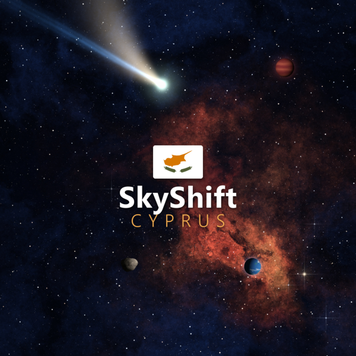
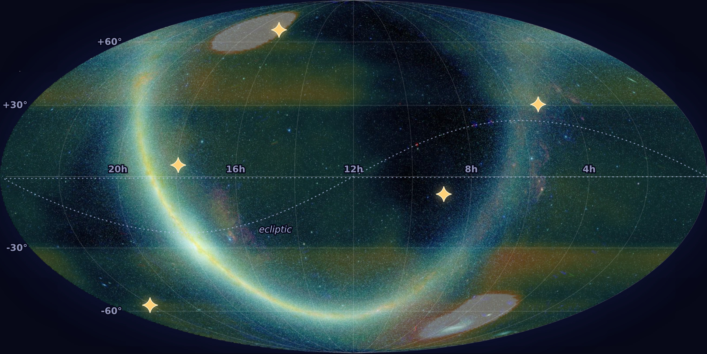
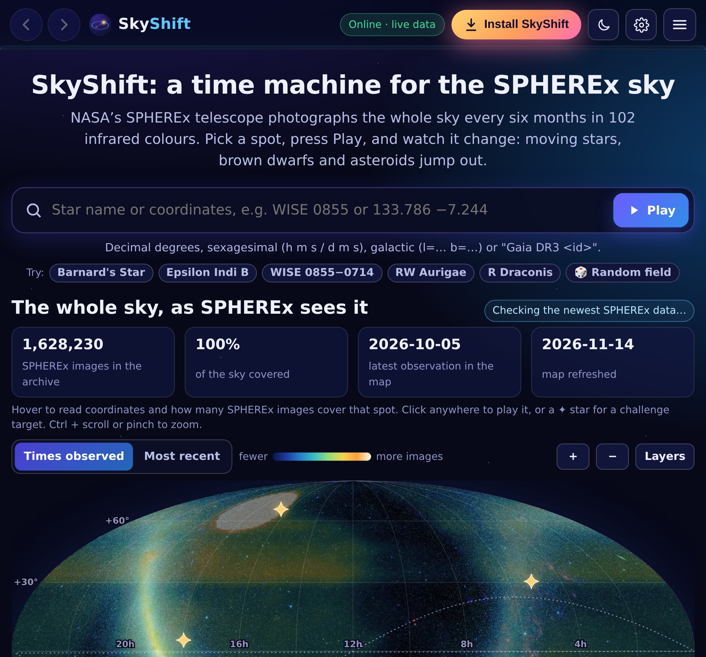
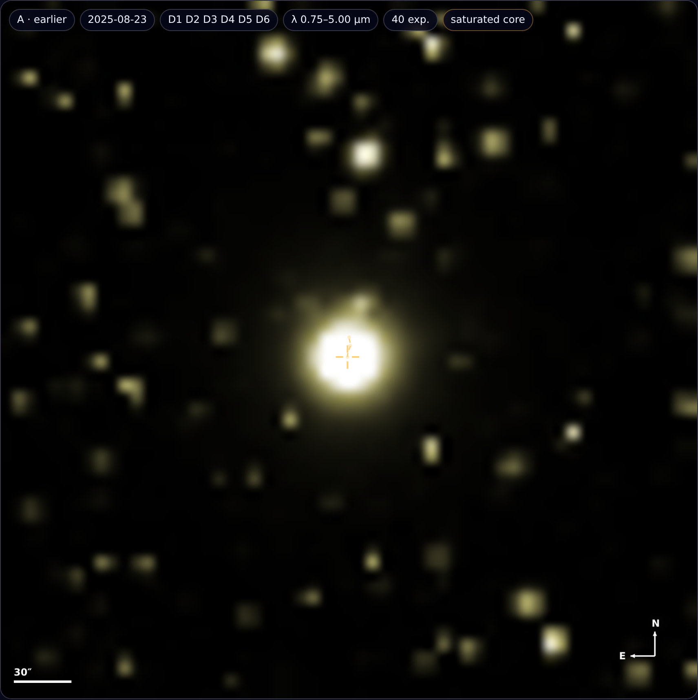
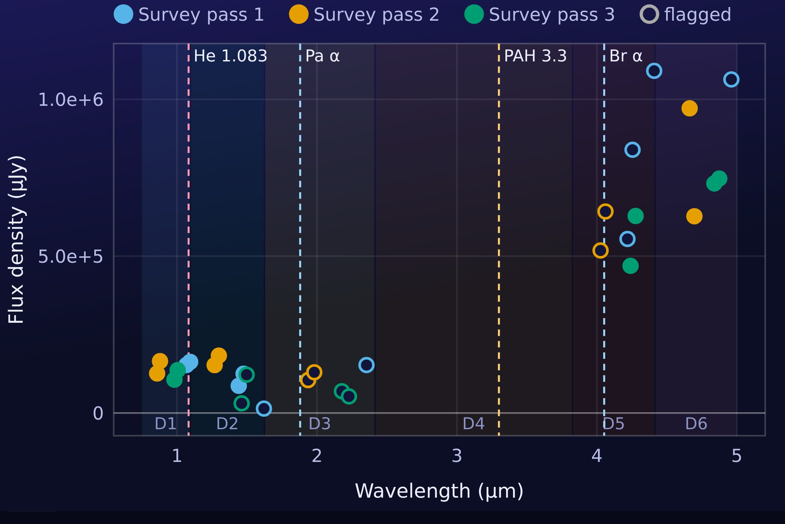
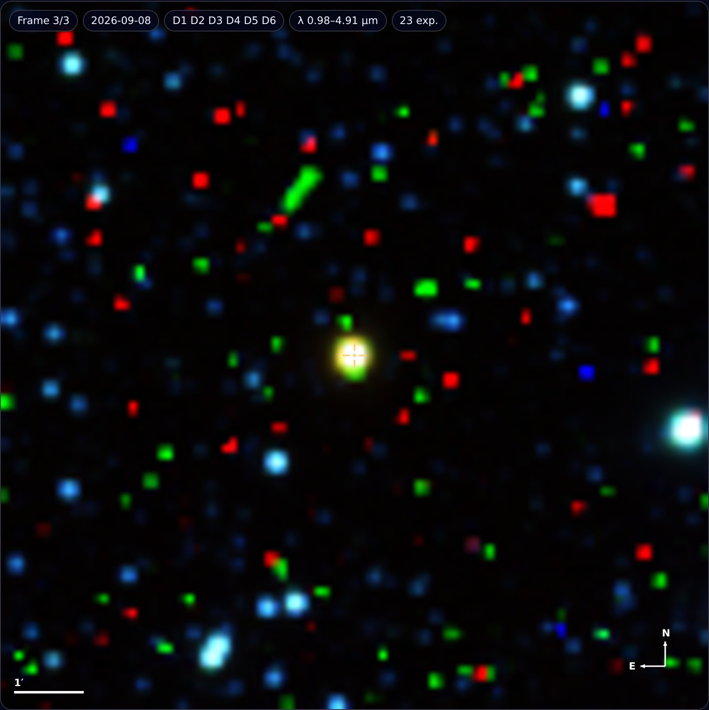

2026 NASA Space Apps Challenge · Planet X and SPHEREx
Type a star or coordinates, press Play, and watch NASA SPHEREx infrared images of that patch of sky play like a film.
Team SkyShift Cyprus
samuelakosaonyejekwe.github.io/skyshift-spherex






mean(D5,D6) − epoch(1).| Target | Proper motion vs Gaia DR3 | Verdict |
|---|---|---|
| Barnard’s Star | 10,139 vs 10,362 mas/yr | agrees (2.2%) |
| RW Aurigae | residual 386 ± 433 mas/yr | agrees |
| Epsilon Indi B | residual ≈1,300 ± 500 mas/yr | direction right (2.5σ) |
| R Draconis · WISE 0855 | saturated · too faint | not reliable |